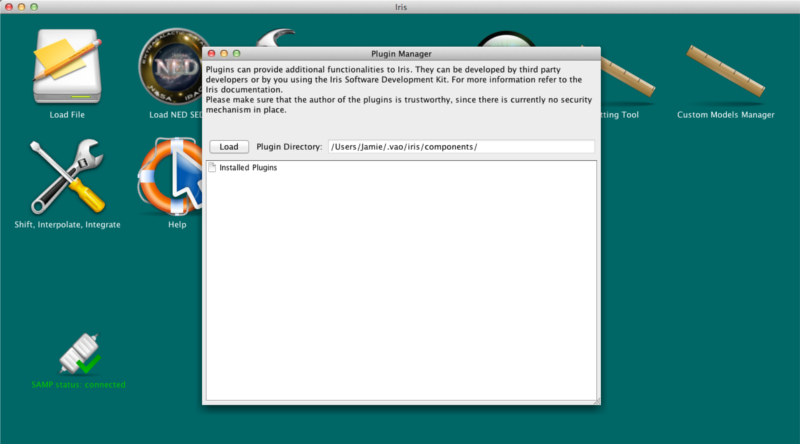
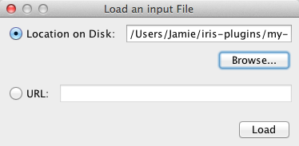
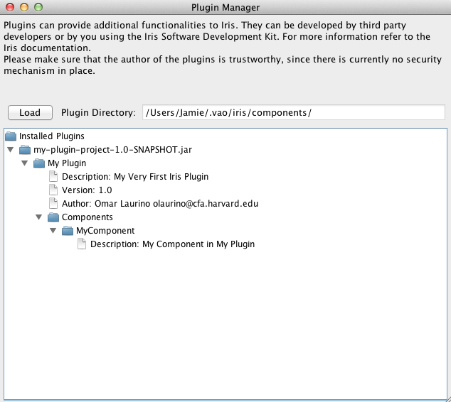

Iris plugins are external components that can add functionality to Iris. For example, the ASDC Data Center, one of the data retrieval engines in Iris, was a third-party plugin before Iris 2.0. Users may create their own plugins in Java using the Iris Software Development Kit and Maven, a tool for building and managing Java projects. This thread explains how to generate, develop and install Iris plugins. It assumes that the reader is proficient in Java. Directions for using Maven are provided.
Last Update: 23 Jun 2015 - Updated for Iris 2.1. New artifactory location added.
A Plugin is a bundle of Components that can be plugged into the Iris framework. A Component implements actual functionalities by providing any number of GUI components, SAMP handlers, SED Event Handlers, whole SEDs, and even Command Line Interfaces. Components are provided with handles to the Iris infrastructure.
The general architecture for an Iris Plugin is loosely coupled and based on the Inversion of Control architectural pattern: Components that can fire Events or register callback methods to them.The two main elements that make up the Iris’ loosely coupled architecture are the SED Manager and the Events Framework.
Iris plugins must be packaged into a JAR file for installation in Iris. In principle, a JAR file can contain multiple Iris plugins. Even though there are no limitations on how to implement an Iris plugin, the most simple way to do it is by using the Iris Plugin Maven archetype. This relieves the developer from setting up the basic development environment and automates most of the building process. Also, Maven has very convenient dependency management.
We provide a project template through a Maven archetype. The template itself is a simple plugin that on starting the plugin prints “Hello, Iris World!” to the screen. You will need Maven 2.0. or higher.
``` {.highlight}
mvn archetype:generate \
-DarchetypeRepository=http://artifactory.cfa.harvard.edu \
-DarchetypeArtifactId=iris-plugin-archetype \
-DarchetypeGroupId=cfa.vo \
-DarchetypeVersion=1.0 \
```
and answer the questions Maven asks (mainly your project- or
artifact-id, group-id and project version).
Develop your plugin code using the hooks provided in the Iris Software Development Kit and the documentation in this guide for reference.
Build the project into a JAR file. From the top of your project’s tree (where the POM file is), run:
mvn package
Install the JAR package into Iris using the Plugin Manager (from the Iris task bar, click Tools->Plugin Manager).

Uninstall a plugin by opening the Plugin Manager, right-clicking on the plugin JAR file, and selecting “Remove”.
If you need more information, or you have an idea for a plugin but you don’t think you have enough Java experience, please feel free to contact us at the CXC HelpDesk.
| [Back to top] |
To generate an Iris plugin project, you need Maven version 2.0 or above. Check to see if you have Maven in a compatible version by opening up a terminal and typing “mvn –version” into the command line. You should see something like:
% mvn --version Apache Maven 3.0.3 (r1075438; 2011-02-28 12:31:09-0500) Maven home: /usr/share/maven Java version: 1.6.0_65, vendor: Apple Inc. Java home: /System/Library/Java/JavaVirtualMachines/1.6.0/Contents/Home Default locale: en_US, platform encoding: MacRoman OS name: "mac os x", version: "10.7.5", arch: "x86_64", family: "mac"
If you get back “mvn: Command not found.”, or you have an outdated version of Maven, then you need to download and install Maven for your system (FYI – the installation instructions are towards the bottom of the page).
We provide an Iris plugin project template, or an archetype in Maven terms, in the CXC public repository at “[http://artifactory.cfa.harvard.edu/artifactory/][]”. Maven provides an easy way to create a new project in the structure of a previous project using the command “mvn archetype:generate”. From the terminal, navigate into the directory you wish to store your project. Create a new project following the Iris plugin archetype by typing the following into the command line:
mvn archetype:generate \
-DarchetypeRepository=http://vaotest2.tuc.noao.edu:8080/artifactory \
-DarchetypeArtifactId=iris-plugin-archetype \
-DarchetypeGroupId=cfa.vo \
-DarchetypeVersion=1.0 \
Maven will ask you for your project’s artifact-id (the name of your project), groupId (written like “org.group”, where “.” is the path/directory delimeter), package (which has the same meaning in Maven as it does in Java; default is same value given for groupId), and the project version number (default is 1.0-SNAPSHOT). After a successful build, you will find a new directory with the same name as your artifactId. The project directory has the following tree structure:
my-plugin-project
|-pom.xml
|-src
|-main
|-java
| |-org
| |-group
| |-TestComponent.java
| |-TestMenuItem.java
| |-TestPlugin.java
|-resources
|-images
|-icon.png
|-thumb.png
where “my-plugin-project” is the artifact-id. This is the template used for creating Iris plugins. The codes are saved under the groupId. “TestComponent.java,” “TestMenuItem.java” and “TestPlugin.java” are template classes you can configure for your own project, which you will rewrite in Developing an Iris Plugin. The images “icon.png” and “thumb.png” are the plugin’s desktop icon and drop-down menu thumbnail, respectively. You may add a test directory under src for testing your project build; the directory tree under test should have the same structure as it has in main.
The Iris plugin template itself is a simple plugin that when activated opens a window with the quintessential message, “Hello World!”. We will use this project to explain some of the necessary hooks needed to connect a plugin to Iris.
| [Back to top] |
This section describes the pom.xml file. If you understand how POMs work, then you can skip to the next section, Iris Software Development Kit.
At the top of Iris plugin project the tree is the file pom.xml. The POM, which stands for Project Object Model, is a XML file used by Maven to build a project. It contains all the necessary information about a project, most importantly the configurations needed to build the project.
Opening pom.xml, you can see that the groupId, artifactId and version values we defined when we generated the project are at the top. These act like an address and timestamp for projects in a Maven repository. The packaging element tells Maven what kind of file to build the project into, in this case, a JAR file. You should not change anything from the top of the file down to the end of properties. In the build element block, you provide details on how the project should be built. The Iris plugin POM by default uses the maven-assembly-plugin to package the final project together with all dependencies.
The more interesting sections are <dependencies> and <repositories>. Under <dependencies>, the developer may list all dependencies needed to compile, test, or execute the application; each entry under <repositories> defines a remote repository to search for each dependency (Maven will automatically look through your local repository, ~/.m2 , and the central repository at “http://repo.maven.apache.org/maven2” first). Let’s look at the list of dependencies and repositories provided by the Iris plugin archetype for an example.
<dependencies>
<dependency>
<groupId>junit</groupId>
<artifactId>junit</artifactId>
<version>3.8.1</version>
<scope>test</scope>
</dependency>
<dependency>
<groupId>cfa.vo</groupId>
<artifactId>iris-common</artifactId>
<version>2.0-beta2</version>
<scope>provided</scope>
</dependency>
</dependencies>
<repositories>
<repository>
<id>vao-deploy-repository</id>
<name>vaotest2.tuc.noao.edu-releases</name>
<url>http://vaotest2.tuc.noao.edu:8080/artifactory/repo</url>
</repository>
</repositories>
For a dependency entry, you must provide the groupId , artifactId (the name of the jar) and version number. The scope defines the stage at which the dependecy is needed (at compilation, runtime, or testing; if undefined, the dependency is available in all classpaths of the project). Iris plugins use provided for the scope, meaning the dependency will be provided at runtime by its container or JDK, for example. At build time, Maven will search for that specific dependency in all of the repositories – central, local and remote. For example, when building the project, Maven will search for junit version 3.8.1 with groupId “junit” in the Maven Central Repository first, sees it there, and will end its search. When Maven tries to find iris-common, it will fail the searches in the central and local repositories, so will then look through the repository vao-deploy-repository at the given URL.
Summary: So what should you take from this? The POM file generated with the Iris plugin project is a template that will work without any modifications. However, we expect that your project will have more dependencies than junit-3.8.1 and iris-commons. Therefore, you will need add each dependency to the <dependencies> list, providing the necessary information (groupId, artifactId and version). If any dependency comes from a remote repository, then you must add an entry under <repositories> with the necessary information (id, name and url).
This overview on POMs is sufficient for building an Iris plugin project. However, Maven provides many more ways of controlling your project configuration with the POM file. To learn more, check out Maven’s documentation on POM files.
| [Back to top] |
The Iris SDK is packaged with Iris in the Iris installation directory: iris-2.0.1-<plat>-<arch>/lib/iris-common-2.0.1.jar. You can browse the Iris API in these Javadocs.
Keep in mind that a portion of the documentation is incomplete. If you have any questions, please contact us at the CXC Help Desk – we’ll be glad to help you!
| [Back to top] |
Plugins have to implement a very simple interface, IrisPlugin. You can find a sample implementation of a Plugin in the class TestPlugin/src/main/java/org/myorg/TestPlugin.java. While it is certainly useful to look into this sample plugin in order to get started, in this tutorial we are going to start from scratch and create all the needed classes.
Let’s create a new file MyFirstPlugin.java in the “TestPlugin/src/main/java/org/myorg/” directory, and let’s start to edit it.
Iris Plugins need to implement the IrisPlugin Java interface. This interface is rather simple and defines some callbacks providing free text metadata like the name of the plugin, the author, the acknowledgement string you would like your users to include in their papers, and so on. These methods are self-explanatory, and they are completely free form.
Let’s implement them, leaving the getComponents() one out for the moment (if you use an Integrated Development Environment you can take advantage of some automation. If you declare that your class is implementing an Interface, the IDE will create a stub for you):
package org.myorg;
import cfa.vo.iris.IrisComponent;
import cfa.vo.iris.sdk.IrisPlugin;
public class MyFirstPlugin implements IrisPlugin {
public String getName() {
return "My Plugin";
}
public String getDescription() {
return "My Very First Iris Plugin";
}
public String getVersion() {
return "1.0";
}
public String getAuthor() {
return "Omar Laurino olaurino@cfa.harvard.edu";
}
public String getAcknowledgments() {
return "If you use this software in your research, please buy me a pizza";
}
}
This code would not compile, because we still need to implement one method. The missing method is the one really providing the functionality offered by the Plugin, i.e. a list of Iris Components.
When Iris initializes the Plugin, it calls the default constructor of all classes implementing the IrisPlugin interface, and then calls its methods to get the metadata and all the Components implemented by the Plugin. So, we will implement a no-arguments constructor in which we initialize the list of components, and the getComponents() method will return such list. Notice that the getComponents() method might be called more than once during the Iris execution. So, it is safer to initialize the list of components in the constructor, and then return it using the getComponents() callback.
package org.myorg;
import cfa.vo.iris.IrisComponent;
import cfa.vo.iris.sdk.IrisPlugin;
import java.util.ArrayList;
import java.util.List;
public class TestPlugin implements IrisPlugin {
private List<IrisComponent> components;
public TestPlugin() {
components = new ArrayList();
components.add(new MyComponent());
}
public List<IrisComponent> getComponents() {
return components;
}
public String getName() {
return "My Plugin";
}
public String getDescription() {
return "My Very First Iris Plugin";
}
public String getVersion() {
return "1.0";
}
public String getAuthor() {
return "Omar Laurino olaurino@cfa.harvard.edu";
}
public String getAcknowledgments() {
return "If you use this software in your research, please buy me a pizza";
}
}
The MyComponent class does not exist yet, and we will now create it in a separate MyComponent.java
| [Back to top] |
Components must implement the IrisComponent interface. However, for convenience, Iris SDK offers the AbstractIrisComponent class. This class provides some basic functionality that can be, if needed, overridden by extending classes.
package org.myorg;
import cfa.vo.iris.IMenuItem;
import cfa.vo.iris.sdk.AbstractIrisComponent;
import java.util.ArrayList;
import java.util.List;
public class MyComponent extends AbstractIrisComponent {
public List<IMenuItem> menus = new MenuItems();
public String getName() {
return "MyComponent";
}
public String getDescription() {
return "My Component in My Plugin";
}
public List<IMenuItem> getMenus() {
return menus;
}
private class MenuItems extends ArrayList<IMenuItem> {
public MenuItems() {
super();
add(new TestMenuItem());
}
}
}
Notice how some of the methods (getName, getDescription) provide metadata about the component, while the getMenus() callback will return Iris with a list of IMenuItems.
Also, AbstractIrisComponent implements an important method that is used to provide Components with some relevant context. The result is that developers can access the IrisApplication context and, more importantly, a reference to the Iris Workspace. These instances are available through the this.app and this.workspace protected field. The following sections contain more information about the Iris Workspace.
| [Back to top] |
While not strictly necessary, most Iris Components provide desktop buttons and/or menu items to the Iris Desktop: these items will perform tasks on SEDs, fetch data from the web, interact with other components and so on. Unsurprisingly, these items must implement the IMenuItem interface. The direct implementation of IMenuItem is not as trivial as the IrisPlugin we encountered before, and requires detailed knowledge of the Iris components lifecycle. For this reason, the Iris framework provides a convenient abstract class implementing the boilerplate functionalities, leaving only the specific code to be implemented by the Plugin developer.
As for the IrisComponents, during its execution Iris will instantiate the Menu Items by calling their default constructor. So, any initialization must be performed in a no-argument constructor. Some common initialization options are setting the MenuItem name, which will be rendered as the menu item title, and its description, which will be displayed as a tooltip. By default, MenuItems will be also rendered as Desktop Buttons. In this case, the title will be displayed as the button name, and the description as its tooltip when the mouse pointer hovers the button. Also, developers can set in the constructor the icons to be displayed for menu items and desktop buttons. If none of this information is provided, default values will be used.
The following code demonstrates how a sample component can be created:
package org.myorg;
import cfa.vo.iris.gui.NarrowOptionPane;
import cfa.vo.iris.sdk.AbstractPluginMenuItem;
public class TestMenuItem extends AbstractPluginMenuItem {
public TestMenuItem() {
setTitle("MyTaskName");
setDescription("My Task Description");
setIconPath("/images/icon.png");
setThumbnailPath("/images/thumb.png");
}
public void onClick() {
NarrowOptionPane.showMessageDialog(null, "Hello, Iris World!", "Test Menu Item", NarrowOptionPane.INFORMATION_MESSAGE);
}
}
In the constructor, you can see how one can set the title and description of an item. We can also set the icons for the desktop button and menu item. The paths for these images start from the directory TestPlugin/src/main/resources.
The method onClick() is called whenever the desktop button is pressed or the menu item is selected. In this example, the callback simply displays a modal dialog window with the ubiquitous “Hello World!” message.
In more useful plugins, the onClick() method would contain code that most likely instantiates and displays a GUI.
| [Back to top] |
The following code is taken from the ASDC Plugin. It shows how one can instantiate a GUI component and add it to the desktop:
@Override
public void onClick() {
if (form == null) {
form = new PluginMainFormCal((SedlibSedManager) workspace.getSedManager());
workspace.addFrame(form);
}
GUIUtils.moveToFront(form);
}
Plugins should instantiate either JDialog Swing components, or JInternalFrame components. PluginMainFormCal is a class extending JInternalFrame, and must be added to the Iris Desktop in order to be managed to it. The IWorkspace.addFrame(JInternalFrame frame) can be used to do so.
The above code instantiates the form if it has not been created yet, and adds it to the desktop. The GUIUtils call moveToFront() is used to make sure that the JInternalFrame is brought to the foreground when users click on the relative button or menu item.
Notice, also, that the PluginMainFormCal takes an instance of SedlibSedManager as its constructor argument. Such instance is part of the Iris workspace context, and is probably the core of the whole framework.
The SedManager, in fact, can be used to create and retrieve Sed instances from the user’s workspace.
| [Back to top] |
The Iris loosely coupled architecture is based on Events and EventListeners. Any Iris Component can register an arbitrary number of listeners. The are a few events which are built-in in Iris. Others can, in principle, be added.
The three main events that listeners might be interested to register to are SedEvent, SegmentEvent, and MultipleSegmentEvent. Each of these events have a payload and a SedCommand attached to it.
In order to implement an Event Handler, implement the relative listener interface, e.g.:
SegmentListener listener = new SedListener() {
@Override
public void process(ExtSed source, SedCommand command) {
System.out.println(sed.getId())
}
}
Then add the handler to the SedEvent:
SedEvent.getInstance().add(listener)
The listener will get called every time an event is fired for an SED. Some events might inspect the payload to process only some subtypes of events, e.g. only when a SED is selected, created, or removed.
| [Back to top] |
The cfa.vo.iris.gui.widget.SedList is a convenient widget that can be used by Components in Plugins. It extends the JList class, and allows Components to seamlessly include a SED browser in their GUI. The list is implemented so that the relevant events are automatically fired. For example, the user will be able to select SEDs in this widget, which automatically fires a SedEvent with SedCommand.SELECTED.
| [Back to top] |
The ExtSed class provides more functionalities than the basic SEDLib’s Sed class. The most useful feature of this class is probably the ability for developers to attach any number of arbitrary objects to a SED. This is useful when Components need to store information about the SED, and they want this information to be persistent, at least during a single execution. For instance, a Component can fit a model to an SED; it will likely want to keep track of this model, even if other SEDs are selected by the user. For convenience, developers can offload the task of keeping track of this ancillary information to the SedManager.
In order to add an attachment, one can use the ExtSed’s addAttachment method, which takes an attachmentId as the first argument: this is the key by which a Component can get the attachment at a later time. The second argument is the actual object to be attached.
In order to get an attachment you can use the getAttachment method, using the right key for getting its instance.
| [Back to top] |
To test and run a plugin in Iris, you will need to package the plugin in a JAR file using Maven first, and then install the JAR using Iris’s Plugin Manager. Please follow the directions in Building the project and Installing Plugins to Iris.
| [Back to top] |
So now let’s say you’re ready to build your project. Maven provides a useful set of build lifecycle commands that make validating, testing, deploying and all the steps inbetween straightforward. The following is a list of the most common build commands, taken directly from the Maven online Build Lifecycle introduction.
A complete list of build goals can be found at the Maven link above.
To run a build command, simply navigate to the top of your project’s tree (where your POM is), and type
mvn <build-goal>
into the command line, where <build-goal> is one of the above goals. Maven will complete all of the previous build steps up to the build goal you specify; e.g., if you choose to package your plugin with mvn package, then Maven will validate, compile and test your project before packaging it. Here are some snipits from what appears when packaging the Iris plugin template
% mvn package [INFO] Scanning for projects... [INFO] [INFO] ------------------------------------------------------------------------ [INFO] Building iris-plugin 1.0-SNAPSHOT [INFO] ------------------------------------------------------------------------ [INFO] [INFO] --- maven-resources-plugin:2.4.3:resources (default-resources) @ my-plugin-project --- [INFO] Using 'UTF-8' encoding to copy filtered resources. [INFO] Copying 2 resources . . . ------------------------------------------------------- T E S T S ------------------------------------------------------- There are no tests to run. Results : Tests run: 0, Failures: 0, Errors: 0, Skipped: 0 [INFO] --- maven-jar-plugin:2.3.1:jar (default-jar) @ my-plugin-project --- [INFO] Building jar: /Users/Jamie/maven-test/my-plugin-project/target/my-plugin-project-1.0-SNAPSHOT.jar [INFO] [INFO] --- maven-assembly-plugin:2.2.1:single (make-assembly) @ my-plugin-project --- . . . [INFO] ------------------------------------------------------------------------ [INFO] BUILD SUCCESS [INFO] ------------------------------------------------------------------------ [INFO] Total time: 7.343s [INFO] Finished at: Thu Sep 26 12:06:41 EDT 2013 [INFO] Final Memory: 12M/81M [INFO] ------------------------------------------------------------------------
If you did not change the build settings in your POM, you will see a few warnings pop-up while building the JAR file with maven-assemby-plugin. This is okay. Essentially what happens is two JAR files are made with the same name: the first by “maven-jar-plugin” (just a JAR) and the second by “maven-assembly-plugin” (JAR with dependencies). The JAR-with-dependencies replaces the basic JAR. In the end, you should find a JAR in directory target/ with the name my-plugin-project-1.0-SNAPSHOT.jar.
If your build fails, check for any artifacts made during previous builds in your project. If you find artifacts, run mvn clean to remove them, and try building your project again.
Once you see “BUILD SUCCESS”, you are ready to install the JAR plugin into Iris.
*Note: If you want to keep the two JAR files, run the command mvn clean (which removes all artifacts), go into you POM, change appendAssemblyId to “true” under the <build> section, and then rerun mvn package. You should see two JARs – my-plugin-project-1.0-SNAPSHOT.jar and my-plugin-project-1.0-SNAPSHOT-jar-with-dependencies.jar.*
| [Back to top] |
Installing the plugin is simple and straightforward. In order to install and uninstall plugins, you use the Iris Plugin Manager. This component is available from the Tools->Plugin Manager menu.

To install a jar file containing plugins you click on the Load button. A new window will allow you to either load a jar file from disk or provide a URL address to the jar file.

Click on Load to close the window and let Iris load the plugins included in the jar file. The plugin manager shows the list of installed plugins and their metadata:

Notice that a jar file can contain an arbitrary number of plugins, and each plugin can contribute any number of menus of buttons. Menus will be added to either the File menu or the Tools menu. The new buttons and menus should become available as soon as you install the plugin.
If we built the default Iris plugin and loaded it through the Plugin Manager, we see the “Test Component” desktop Icon appear. When we click on it, we get a new frame with our fun little message:

For more information on Iris’ framework and developing plugins, you can read “Iris: an Extensible Application for Building and Analyzing Spectral Energy Distributions.” Sections 5 and 7 are most useful for software developers wanting to extend Iris.
| [Back to top] |
| Date | Change |
|---|---|
| 10 Oct 2013 | Created. Moved from “How to Create and Install Iris Plugins” to here. |
| 02 Dec 2013 | Updated for Iris 2.0.1 |
| 14 Apr 2014 | Added the Quick Start section. |
| 23 Jun 2015 | Updated for Iris 2.1. New artifactory location added. |
| [Back to top] |